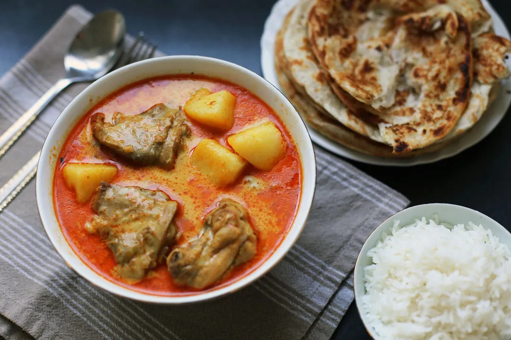
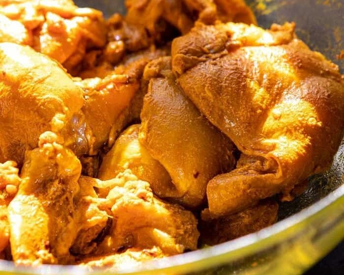
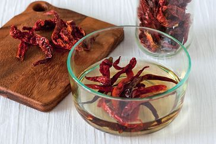
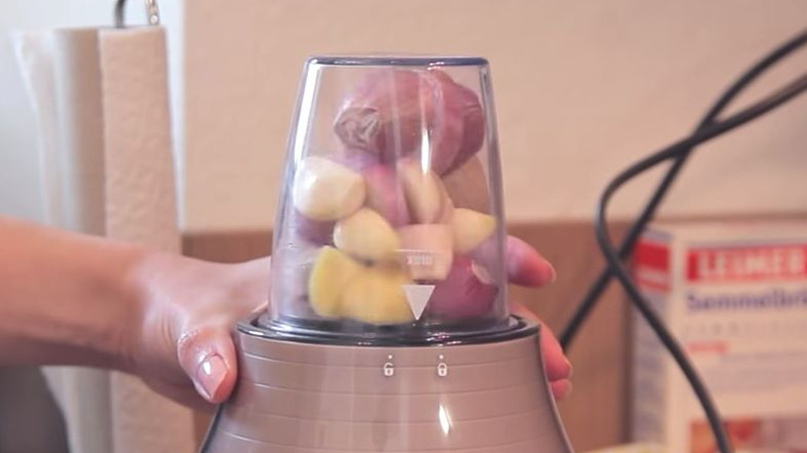
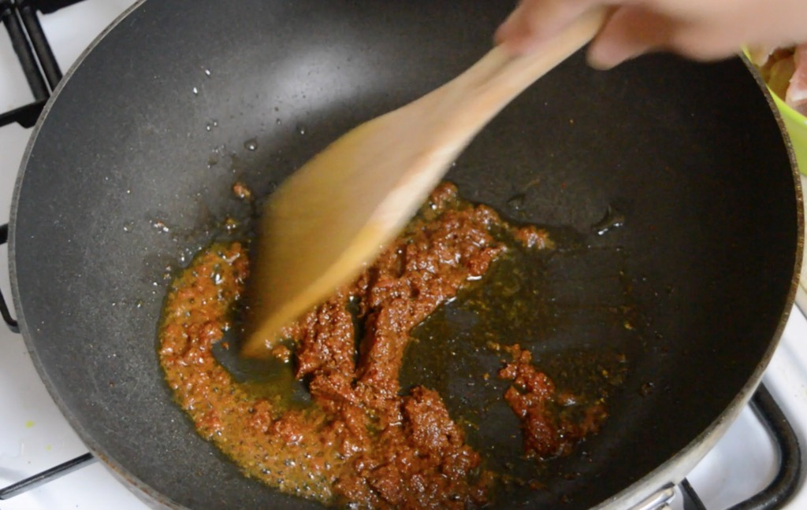
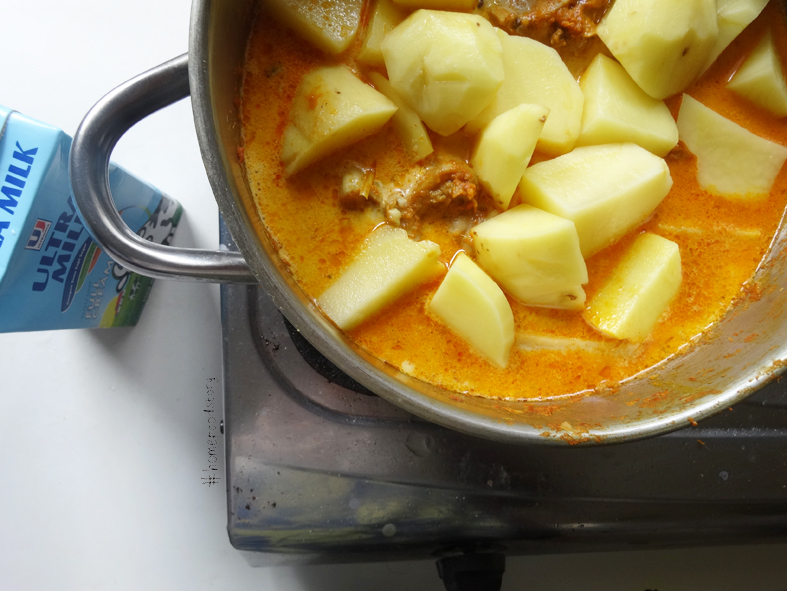
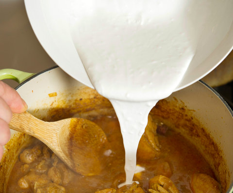

My mother is Nyonya (someone who is a mix of Malay and Chinese), so was my grandmother, and my great grandmother. So I guess I am Nyonya too. I’m very proud of it because it comes with a rich history of not just the Chinese people’s migration and intermarriage, but also the rich cuisine of the Nyonya people.

There are so many delicious dishes in Nyonya cuisine, but my favourite has got to be kari ayam (Malaysian chicken curry). It is a hearty dish and goes so well with rice or roti canai (a type of Indian flatbread). Like most dishes originating from Malaysia, kari ayam represents the cultural melting pot of Malaysia, where it is a mix of Malay, Chinese, and Indian cuisines.
If you’d like to try kari ayam, but don’t want to fly all the way to Malaysia, please try out this recipe!
Welcome to The Little Nyonya!
My name is Irene, and I love to cook! I am currently a student in the Design faculty at George Brown College. During my free time, I like to try new recipes, but most of all, I love to cook and eat with my family. You can find many of my mom and my own recipes on this website!
Malaysian Chicken Curry(Kari Ayam) Recipe
Ingredients
450 g chicken meat
3 1⁄2 tbsp curry powder
1 tbsp light soy sauce
5 chilli peppers (dried)
3 candlenuts
3 garlic cloves
3 shallots
2 cm ginger
3 tbsp oil
300 ml water
2 potatoes cut into large pieces
1 lemongrass stalk roughly chopped
1 yellow onion diced
5 curry leaves
300 ml coconut milk
salt & sugar (to taste)
Directions
Marinate chicken with curry powder and soy sauce for at least 30 minutes.

Soak dried chillies until soft.

In a blender or pestle and mortar, blend the chilies, candlenuts, garlic, shallots, onions, ginger, and curry powder until it is like a paste.

Heat oil in a large pot on medium high heat. Add chili paste and stir fry until fragrant

Add chicken and mix until mixture is a bit dry. Make sure not to burn or your curry will taste bitter. To prevent burning, add more oil while stir frying. Add 300ml of water.
Add potatoes, lemongrass stalks, and curry leaves into pot. Once it boils, lower to a simmer and simmer for 30-40 minutes

Add coconut milk and mix well with the other ingredients. Turn to high heat until it boils, then add salt and sugar to taste.

Serve with rice, roti canai, or even bread. ENJOY!